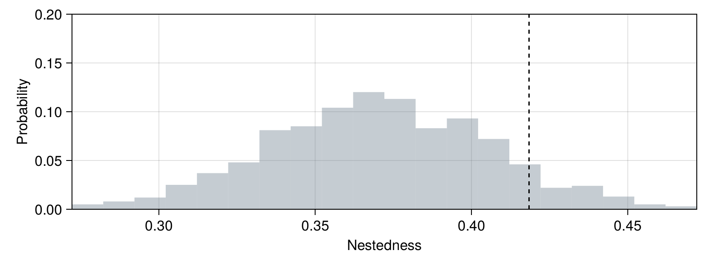

Random draws
Abstract
This page presents an overview of methods to draw from a probabilistic network, and ways to generate structural null models from a binary network under various constraints. We present an illustration using plant-pollinator data (Dupont et al., 2003) to show how these functions can be applied to test the significance of network structure.
Drawing from a probabilistic network
#
SpeciesInteractionNetworks.randomdraws — Function.
randomdraws(N::SpeciesInteractionNetwork{<:Partiteness, <:Probabilistic})
Returns a binary network by making random draws from a probabilistic network. Each interaction is considered as an independent Bernoulli trial.
References
Null models for hypothesis testing
The usual null models of network structure can be generated using a PermutationConstraint as the first argument. Although technically speaking, these are not permutations, it is nevertheless useful to map the constraints from one method of network generation to another.
#
SpeciesInteractionNetworks.nullmodel — Function.
nullmodel(::Type{Degree}, N::SpeciesInteractionNetwork{<:Partiteness, <:Binary})
Returns a probabilistic network under the null model that all interactions occurr with a probability equal to the average of their generality and vulnerability, i.e. proportionally to how many links the species involved are establishing:
$P(i \rightarrow j) = \frac{1}{2}\left(\frac{\sum A_{i \rightarrow \cdot}}{|B|} + \frac{\sum A_{\cdot \rightarrow j}}{|T|} \right)$
References
nullmodel(::Type{Connectance}, N::SpeciesInteractionNetwork{<:Partiteness, <:Binary})
Returns a probabilistic network under the null model that all interactions occurr with a probability equal to the network connectance, i.e. in a network with $L$ links, and $|T|$ species on the top and $|B|$ species on the bottom,
$P(i \rightarrow j) = \frac{L}{|T|\times |B|}$
Note that for Unipartite networks, $|T| = |B| = |S|$ (the two sides have the same number of species).
References
nullmodel(::Type{Generality}, N::SpeciesInteractionNetwork{<:Partiteness, <:Binary})
Returns a probabilistic network under the null model that interactions happen proportionally to the generality of the species, i.e. their expected number of outgoing links:
$P(i \rightarrow j) = \frac{\sum A_{i \rightarrow \cdot}}{|B|}$
References
nullmodel(::Type{Generality}, N::SpeciesInteractionNetwork{<:Partiteness, <:Binary})
Returns a probabilistic network under the null model that interactions happen proportionally to the vulnerability of the species, i.e. their expected number of incomin links:
$P(i \rightarrow j) = \frac{\sum A_{\cdot \rightarrow j}}{|T|}$
References
Linear filtering
The linear filter from Stock et al. (2017) is a general formulation of the null models presented above.
#
SpeciesInteractionNetworks.linearfilter — Function.
linearfilter(N::SpeciesInteractionNetwork{<:Partiteness, <:Binary}; α::Vector{T}=ones(4)) where {T <: AbstractFloat}
The linear filter returns a probability of observing an interaction as a function of a linear combination of the observed value of the interaction, the generality and vulnerability of the species, and the connectance of the network. It is also used to provide a generic implementation of nullmodel.
Specifically, the probability of an interaction is expressed as a weighted average, the weights being given as the vector α.
The vector α has four elements, all positive, and $\sum \alpha = 1$ (this is enforced internally, and does not need to be checked by the user).
$\alpha_1$ is the weight of the original interaction; it helps to think of it as a penalization parameter, that explains how important the original observation is.
$\alpha_2$ is the weight of generality; it regulates how important the probability of the species establishing an interaction is in the resulting network.
$\alpha_3$ is the weight of vulnerability; it regulates how important the probability of the species receing an interaction is in the resulting network.
$\alpha_4$ is the weight of connectance.
References
Illustration
In order to illustrate the use of null models, we will look at the data from Dupont et al. (2003), and specifically generate multiple networks under different null models, then compare the nestedness (using η) to the empirical network.
using SpeciesInteractionNetworks
import DelimitedFiles
import CairoMakie
import Statistics
The data are available from the IWDB, but in order to avoid making unecessary calls to their webserver, we have reproduced a version here:
int_mat = Bool[
1 1 1 0 1 1 0 0 1 0 0; 1 0 0 1 1 1 0 1 0 1 0; 1 0 1 0 1 1 1 0 0 0 0;
0 1 0 1 0 1 1 1 0 1 0; 1 0 1 0 1 1 1 0 0 1 0; 0 1 1 0 1 0 1 0 1 0 1;
1 1 1 1 0 0 1 0 0 0 0; 1 0 0 0 1 1 0 0 0 1 0; 1 1 1 0 0 0 0 1 0 0 0;
1 1 0 0 0 1 1 0 0 0 0; 1 1 0 1 0 0 0 0 1 0 0; 1 1 1 0 0 0 0 1 0 0 0;
0 1 0 1 0 0 0 1 0 0 0; 1 0 1 0 1 0 0 0 0 0 0; 0 0 1 0 1 0 0 0 0 0 1;
1 0 1 1 0 0 0 0 0 0 0; 0 0 1 1 1 0 0 0 0 0 0; 0 1 0 0 0 0 1 0 1 0 0;
0 0 0 0 0 1 1 0 0 0 0; 0 0 0 1 0 1 0 0 0 0 0; 1 0 0 0 1 0 0 0 0 0 0;
0 0 1 0 0 0 0 1 0 0 0; 1 0 0 0 0 0 0 0 1 0 0; 0 0 1 0 0 0 0 0 1 0 0;
0 0 0 1 0 0 0 0 0 0 0; 0 1 1 0 0 0 0 0 0 0 0; 1 0 0 1 0 0 0 0 0 0 0;
1 0 0 0 0 0 0 0 0 0 0; 0 0 0 0 0 0 0 0 0 1 0; 0 0 0 0 0 0 0 1 0 0 0;
0 1 0 0 0 0 0 0 0 0 0; 0 1 0 0 0 0 0 0 0 0 0; 1 0 0 0 0 0 0 0 0 0 0;
1 0 0 0 0 0 0 0 0 0 0; 0 0 0 1 0 0 0 0 0 0 0; 0 0 0 1 0 0 0 0 0 0 0;
0 1 0 0 0 0 0 0 0 0 0; 0 0 0 0 0 0 0 0 1 0 0
]
We can turn this into a network (without species names!):
edges = Binary(int_mat)
nodes = Bipartite(edges)
N = SpeciesInteractionNetwork(nodes, edges)
@info "$(richness(N,1)) pollinators"
@info "$(richness(N,2)) plants"
@info "$(length(N)) interactions"
[ Info: 38 pollinators
[ Info: 11 plants
[ Info: 106 interactions
We first measure the nestedness of the network:
n0 = η(N)
0.41842877034736853
The next step is to generate a template probabilistic network under a specific null model. Here, we will focus on the null model based on the joint degree distribution, as used by e.g. Bascompte et al. (2003):
Nd = nullmodel(Degree, N)
SpeciesInteractionNetwork{Bipartite{Symbol}, Probabilistic{Float64}}(Bipartite{Symbol}([:top_1, :top_2, :top_3, :top_4, :top_5, :top_6, :top_7, :top_8, :top_9, :top_10 … :top_29, :top_30, :top_31, :top_32, :top_33, :top_34, :top_35, :top_36, :top_37, :top_38], [:bottom_1, :bottom_2, :bottom_3, :bottom_4, :bottom_5, :bottom_6, :bottom_7, :bottom_8, :bottom_9, :bottom_10, :bottom_11]), Probabilistic{Float64}(sparse([1, 2, 3, 4, 5, 6, 7, 8, 9, 10 … 29, 30, 31, 32, 33, 34, 35, 36, 37, 38], [1, 1, 1, 1, 1, 1, 1, 1, 1, 1, 1, 1, 1, 1, 1, 1, 1, 1, 1, 1, 1, 1, 1, 1, 1, 1, 1, 1, 1, 1, 1, 1, 1, 1, 1, 1, 1, 1, 2, 2, 2, 2, 2, 2, 2, 2, 2, 2, 2, 2, 2, 2, 2, 2, 2, 2, 2, 2, 2, 2, 2, 2, 2, 2, 2, 2, 2, 2, 2, 2, 2, 2, 2, 2, 2, 2, 3, 3, 3, 3, 3, 3, 3, 3, 3, 3, 3, 3, 3, 3, 3, 3, 3, 3, 3, 3, 3, 3, 3, 3, 3, 3, 3, 3, 3, 3, 3, 3, 3, 3, 3, 3, 3, 3, 4, 4, 4, 4, 4, 4, 4, 4, 4, 4, 4, 4, 4, 4, 4, 4, 4, 4, 4, 4, 4, 4, 4, 4, 4, 4, 4, 4, 4, 4, 4, 4, 4, 4, 4, 4, 4, 4, 5, 5, 5, 5, 5, 5, 5, 5, 5, 5, 5, 5, 5, 5, 5, 5, 5, 5, 5, 5, 5, 5, 5, 5, 5, 5, 5, 5, 5, 5, 5, 5, 5, 5, 5, 5, 5, 5, 6, 6, 6, 6, 6, 6, 6, 6, 6, 6, 6, 6, 6, 6, 6, 6, 6, 6, 6, 6, 6, 6, 6, 6, 6, 6, 6, 6, 6, 6, 6, 6, 6, 6, 6, 6, 6, 6, 7, 7, 7, 7, 7, 7, 7, 7, 7, 7, 7, 7, 7, 7, 7, 7, 7, 7, 7, 7, 7, 7, 7, 7, 7, 7, 7, 7, 7, 7, 7, 7, 7, 7, 7, 7, 7, 7, 8, 8, 8, 8, 8, 8, 8, 8, 8, 8, 8, 8, 8, 8, 8, 8, 8, 8, 8, 8, 8, 8, 8, 8, 8, 8, 8, 8, 8, 8, 8, 8, 8, 8, 8, 8, 8, 8, 9, 9, 9, 9, 9, 9, 9, 9, 9, 9, 9, 9, 9, 9, 9, 9, 9, 9, 9, 9, 9, 9, 9, 9, 9, 9, 9, 9, 9, 9, 9, 9, 9, 9, 9, 9, 9, 9, 10, 10, 10, 10, 10, 10, 10, 10, 10, 10, 10, 10, 10, 10, 10, 10, 10, 10, 10, 10, 10, 10, 10, 10, 10, 10, 10, 10, 10, 10, 10, 10, 10, 10, 10, 10, 10, 10, 11, 11, 11, 11, 11, 11, 11, 11, 11, 11, 11, 11, 11, 11, 11, 11, 11, 11, 11, 11, 11, 11, 11, 11, 11, 11, 11, 11, 11, 11, 11, 11, 11, 11, 11, 11, 11, 11], [0.5095693779904306, 0.5095693779904306, 0.46411483253588515, 0.5095693779904306, 0.5095693779904306, 0.5095693779904306, 0.46411483253588515, 0.41866028708133973, 0.41866028708133973, 0.41866028708133973 … 0.07177033492822966, 0.07177033492822966, 0.07177033492822966, 0.07177033492822966, 0.07177033492822966, 0.07177033492822966, 0.07177033492822966, 0.07177033492822966, 0.07177033492822966, 0.07177033492822966], 38, 11)))
We can draw samples from this network, and measure their nestedness:
Rd = [randomdraws(Nd) for _ in 1:999]
nd = η.(Rd)
@info round.((minimum(nd), Statistics.median(nd), maximum(nd)); digits=4)
[ Info: (0.2722, 0.3703, 0.4721)
This is all we need to plot the results:
f = CairoMakie.Figure(backgroundcolor = :transparent, resolution = (800, 300))
ax = CairoMakie.Axis(f[1,1], xlabel="Nestedness", ylabel="Probability")
CairoMakie.hist!(ax, nd; normalization=:probability, fillto=0.0, color=(:slategray, 0.4), bins=20)
CairoMakie.vlines!(ax, [n0], color=:black, linestyle=:dash)
CairoMakie.tightlimits!(ax)
CairoMakie.ylims!(ax, (0.0, 0.2))
CairoMakie.current_figure()

In practice, we are often interested in deriving a p-value from the comparison of the empirical and null values of the structure measure. Note that, functionally, the generation of null models can be seen as permutation testing, and therefore we can approximate the p-value corresponding to the hypothesis that the network is more nested than expected under its degree distribution by looking at the proportion of randomized values that are larger than the empirical observation:
@info "𝑝 ≈ $(round(Statistics.mean(n0 .<= nd); digits=3))"
[ Info: 𝑝 ≈ 0.082